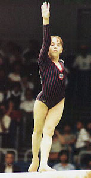

Elena Levochkina (USSR)
1989 Intl. Junior Championships AA Gold Medalist

Elena was born on July 22, 1975. Despite early successes in the junior ranks, Elena disappeared from competition after injuring her wrist at the 1989 International Junior Championships.
Competition Results
1987
Jr. Friendship Tournament (Druzhba): 2nd Team, 19th AA
1988
Jr. Friendship Tournament (Druzhba): 1st Team, 8th AA
Jr. USSR Championships: 1st AA
1989
Intl. Junior Championships: 1st AA
Jr. European Team Championships: 1st Team
Jr. Friendship Tournament (Druzhba): 1st Team, 1st AA, 1st UB, 1st B, 1st
FX, 6th V
Jr. GDR-USSR Dual Meet: 1st Team, 2nd AA
Jr. Team Europeans: 1st Team, 2nd AA
This page was created on September
02, 2005 and was last updated on July 19, 2024.
© Gymn Forum